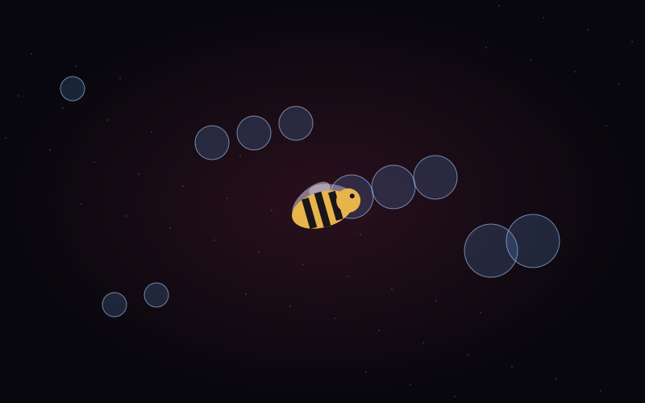

Wasp Dodge+
Four lives
One more second
Keyboard required for movement. Open it on a desktop or laptop to play.

THE IDEASimple rules
Simple rules
A moving challenge
A survival game built around a simple challenge: guide a wasp through moving circles and stay in play for as long as possible.
Wasp Dodge+ is a full-screen arcade experiment in movement, collision, and feedback. Four lives leave room to recover from a mistake, while a brief cooldown prevents a single collision from ending the run. The score measures time survived, making every extra second the next small goal.
EXPLORE THE EXPERIENCEA few gestures
A few gestures
Room to play
Keyboard required for movement. Open it on a desktop or laptop to play.
- Space / click
- Start a run.
- WASD / arrow keys
- Move the wasp and avoid the circles.
- R
- Restart and try for a longer run.
- Four lives
- Each collision costs one life; the score is survival time.
Try it
See where it goes
Launch Wasp Dodge+ Keyboard required for movement. Open it on a desktop or laptop to play.